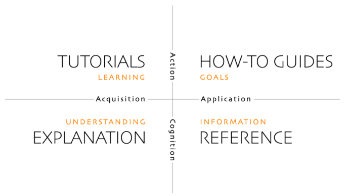
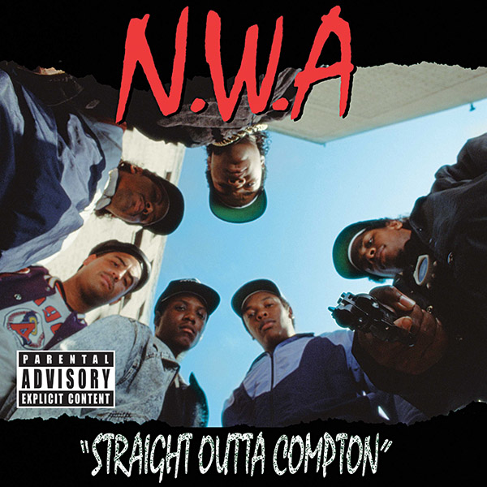

I decided to make a blog!
For quite a while I’ve been feeling stuck in my career and unsure about how to demonstrate and build my data-science skills. All the advice I’ve heard (and read) can be boiled down into variations of “do a personal project!!”. Macklin Flusher has this fantastic article about modern job searching. The article is worth a full read, but the TLDR is this:
Well, I finally decided to follow Macklin’s advice (more on that later 😉), but then (because I can’t resist using one goal to achieve other goals 🤦🏾♂️) I decided to also build a blog to host that project.
But wait, what’s a blog? 🤔
A blog is just a website with a reverse chronological order (newer content appears first) that can be indexed and syndicated on RSS feeds. Whereas many website pages are pretty static, because they are updated so frequently, blogs tend to be very dynamic.
But wait, why a blog? 🧐
I’ve created a blog because I want to:
Build a brand by building an easily-shared portfolio of work
- This blog is inspired by what I’ve been impressed by in the wild - particularly blogs by Emily Riederer, Chip Huyen, Danielle Navarro, and Vicky Boykin1.
- These blogs all differ in area of focus, style, content, etc but they all share one thing in common - they help their authors build their personal brands by publicizing their skill and work.
Shore up what I’m learning by writing for an audience
- Below is a visualization by diataxis that provides a systematic way of thinking about technical writing.

- Right now, this blog is meant to help me promote my work, demonstrate my understanding, and teach (or learn with) others. That means this blog will primarily feature explainers, how-to-guides, and tutorials.2
- TLDR: (particularly for visual learners out there 😉) this blog will focus on quadrants 1, 2, and 3!
Centralize information that I want to come back to
- I find that I always stumble on and quickly lose track of really helpful resources so I’ll put them all here.
Build an online space where I can refine my thoughts and ideas
- Inspired by Anne-Laure Le Cuff, I would love for this blog to be “an online space at the intersection of a notebook and a blog” where I can share and cultivate connected thoughts and ideas.
- Crucially, I want this blog to be one I enjoy creating and tending. To understand the kind of content I enjoy, you’ll need to understand a little bit more about me. Conveniently, I have a page that helps you do just that!
So, to summarize, I’m hoping to create a digital garden that helps me build a brand, shore up what I’m learning, and centralize information … Sounds easy enough?! 😫
So, welcome to my blog shokunin … straight outta brooklyn.

Dedicated to Craft,
Dami